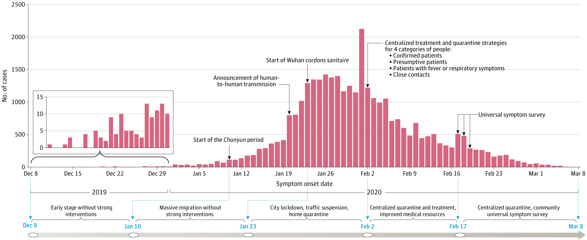

Statistical And Population Genetics
Medical Genomics

We are located in Wuhan, a metropolitan city in Central China besides the Yangtze River.
COVID-19 Research
This page provides information about the COVID-19 research projects led by Tongji School of Public Health, Huazhong University of Science and Technology, in collaboration with Harvard T.H. Chan School of Public Health and School of Public Health, Fudan University.
Data
We anlayzed COVID-19 cases in Wuhan from December 8, 2019 to March 18, 2020 (Pan et al. 2020, JAMA and Hao et al. 2020, submitted). The data were extracted on March 9 from the municipal Notifiable Disease Report System. A total of 32,583 laboratory-confirmed cases were included in the analyses (as shown in the figure below). Please refer to Pan et al. 2020, JAMA for details.Click to download the daily case count data.
|  The epidemic curve of COVID-19 in Wuhan for 32,583 laboratory-confirmed cases from December 8, 2019 to March 18, 2020. |